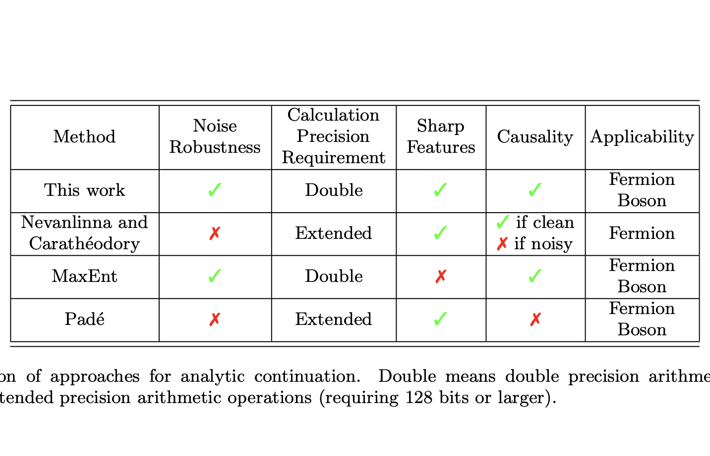
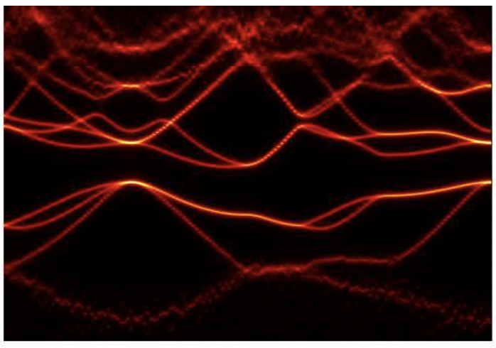

My research
This page is Still under construction!
Here is my google scholar profile, which perfectly reflects what I did in the past.
Generally speaking, my research focuses on understanding quantum systems from a theoretical perspective. Currently, I am interested in efficient numerical algorithms in quantum field theory, strongly correlated systems, quantum chemistry and condensed matter physics. I am also working on modeling and computation of open quantum systems.
Papers
- Robust analytic continuation of Green's functions via projection, pole estimation, and semidefinite relaxation, Z. Huang, E. Gull, L. Lin. Physics Review B 107, 075151
- Revealing Excited States of Rotational Bose-Einstein Condensates, J. Yin, Z. Huang, Y. Cai, Q. Du, L. Zhang. arXiv:2301.00425
- Efficient Frozen Gaussian Sampling algorithms for nonadiabatic quantum dynamics at metal surfaces, Z. Huang, L. Xu, Z. Zhou Journal of Computational Physics 474, 111771
- Constrained High-Index Saddle Dynamics for the Solution Landscape with Equality Constraints, J. Yin, Z. Huang, L. Zhang. Journal of Scientific Computing 91 (2), 1-23
 

Currently, I am mainly working on twisted bilayer graphene, interger quantum Hall effect and fractional quantum Hall effect.